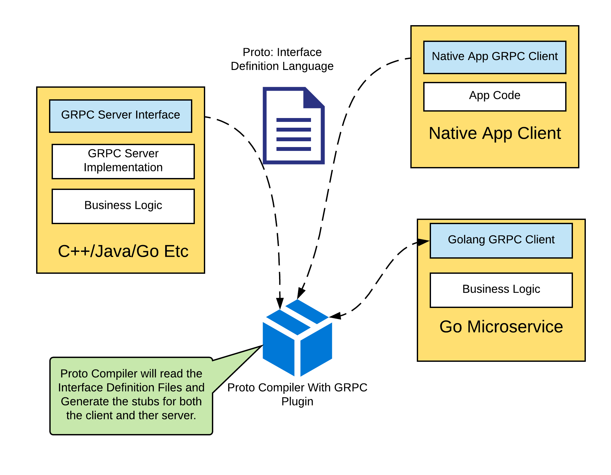

GRPC
Experiences and Stumbles
GRPC is Better
This will be a short talk, everyone knows that GRPC is vastly superior to HTTP.
- Better understanding of GRPC (and components)
- Working example
- Patterns and Anti-Patterns
- When to use it
Core Concepts To Fully Understand GRPC
- Protobuf
- HTTP 2 - as it relates to GRPC
- GRPC
Protobuf
- Open Source Mechanism for serializing structured data
- Language Agnostic
- Defines a schema through a proto
- Tranport mechanism that GRPC Uses
``` message Person { required string name = 1; required int32 id = 2; optional string email = 3; enum PhoneType { MOBILE = 0; HOME = 1; WORK = 2; } message PhoneNumber { required string number = 1; optional PhoneType type = 2 [default = HOME]; } repeated PhoneNumber phone = 4; } ```
HTTP 2
Enough to wet the palate
- First MAJOR release (2015) of HTTP since 1996
- Reduced latency main motivator
- Superior Compression
- Binary Protocols
- Improved Streaming
- Server Push
- Long Lived TCP Connection (A.K.A. Multiplexing)
- Communication Mechanism that GRPC Uses
GRPC
- Open Source RPC Framework
- Many Languages Supported (Go, C++, Java, etc)
- Uses Proto for its Interface Definition Language
- Code Generation for Messages and Functions
- Default Transport Mechanism is Protobuf
- Leverages HTTP2 Protocol
- Easier to build non-RESTful APIs

Working Example
Internals of Reddiyo Pods
Proto Patterns
| Pattern | Rationale |
|---|---|
| Use the scalar types when possible | Always favor the lightweight |
| Use Enums when possible | Data Integrity |
| Version your Proto files | Helps with Client Version Management |
| Do not reuse variable numbers | Ensures backwards compatability |
Main Packages
| Pattern | Rationale |
|---|---|
| Catastrophic Failures | No point in starting if you cannot get main running |
| Bounded Context of Protobufs | Fully Decouples transport layer from business logic |
| Use Standard Protobuf Errors | Simplicity and Consistency |
| Owns full instantiation of the service layer | Singleness of purpose |
| Use the Getters and Setters | Keeps data integrity |
| Never Send Nils - use empty package | Protobuf cannot handle nil |
Microservice Logic Layer Package
| Pattern | Rationale |
|---|---|
| Protobuf Structures don't pass into this layer | Keeps separation of transport from business logic |
| All Unit Testing is at the microservice layer | Allows unit tests to focus entirely on business logic |
| All Exported Functions return errors | Allows transport layer to handle errors |
| Only Export what you have to | Quarantines the microservice code |
Client Package
| Pattern | Rationale |
|---|---|
| Contain the Connection data in a struct | Makes it easy to reuse and control |
| Use a Constructor to generate the connection | Isolates how to create the connections |
| Initialize connections as part of startup | Want the client to fail if it cannot get a connection |
| Integration tests reside with the client and are owned by the consumer | Helps to ensure that backwards compatability is maintained |
| Don't allow protobuf to go beyond the client | Separates transport protocol layer from business logic |
| Convert Protobuf Error Codes to Shared Errors | Helps that downstream systems will not have to be transport aware |
Random Notes & Lessons Learned
- Load Balancing
- Circuit Breaking
- Down Sides
GRPC Just Broke Your Load Balancer
- L4 Load Balancer makes a major assumption
- Option 1: Handle in the client directly in GRPC
// Set up a connection to the server.
conn, err := grpc.Dial(address, grpc.WithInsecure(),
grpc.WithBalancerName(roundrobin.Name))
if err != nil {
log.Fatalf("did not connect: %v", err)
}
defer conn.Close()
Circuit Breaking
- Circuit Breaking is still a must in GRPC
- Expect Failure
- Option 1: Bake it in the client Code (e.g. Hystix)
https://github.com/afex/hystrix-go - Recommended: Use a Service Mesh
https://istio.io/
Down Sides
- Browsers are very good at JSON
- Tooling isn't mature (especially at the browser level)
- Human Readable has its upsides
- Different language for defining API
- Monolithic code generation is hard (but not as hard as OpenAPI)
- Performance improvements only show up at higher loads
In Conclusion
- GRPC is a solid choice for lightweight client server communication (Languange Agnostic, Type Secure, and backwards compatable)
- Great fit for service mesh in your microservices
- Benefits from strong architectual patterns and decoupling
Any Questions
 #goReddiyo
#goReddiyo
 @Reddiyo
@Reddiyo